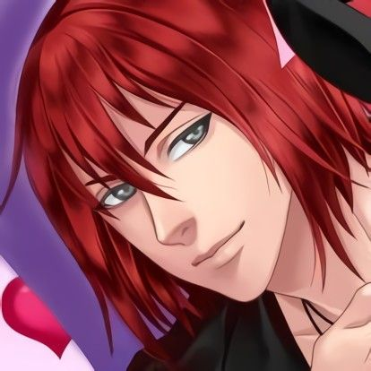
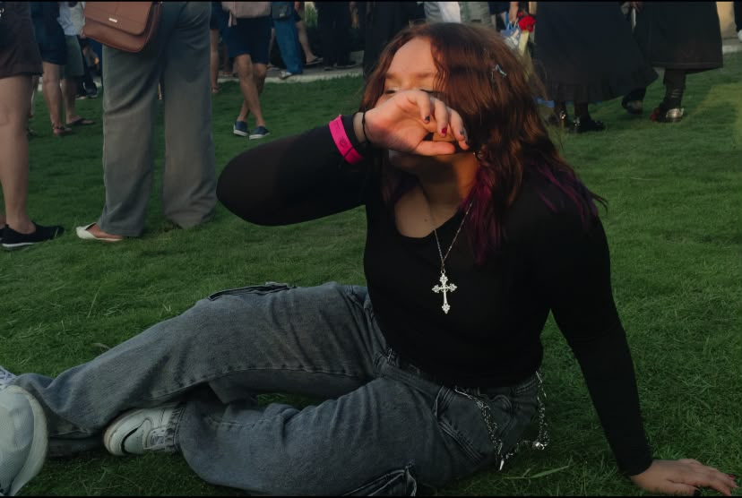
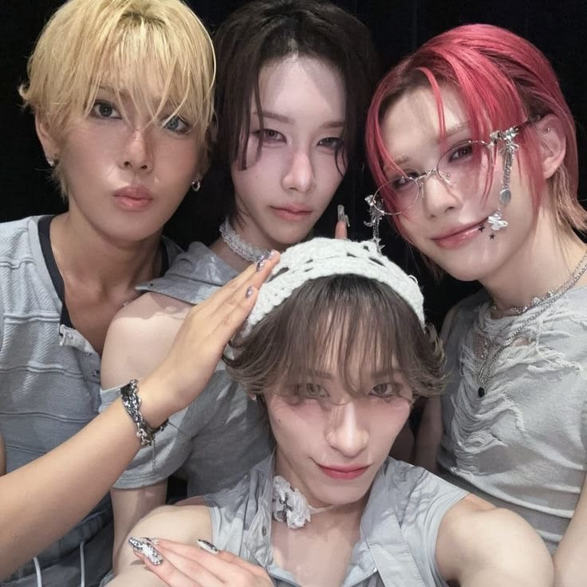
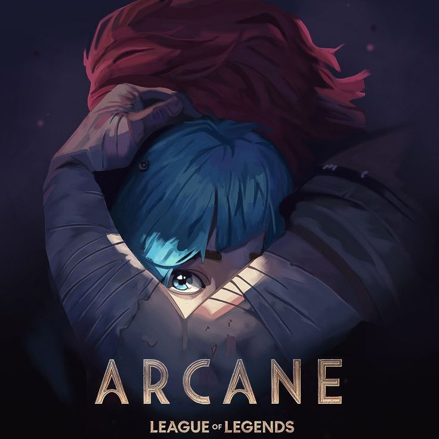
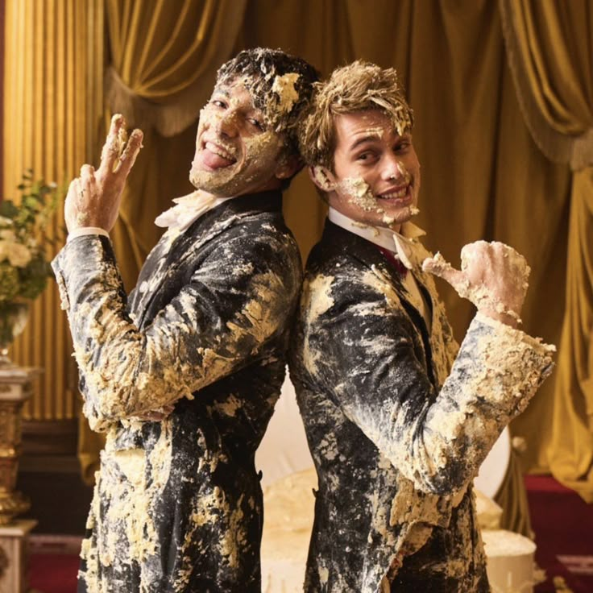
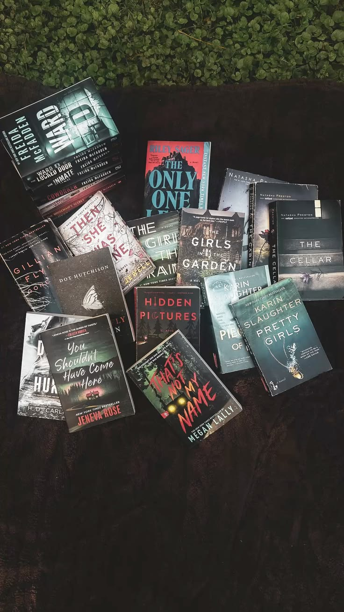
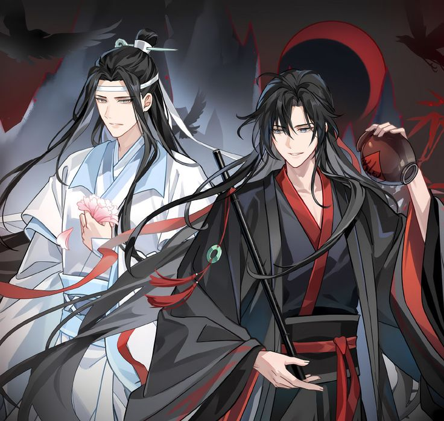
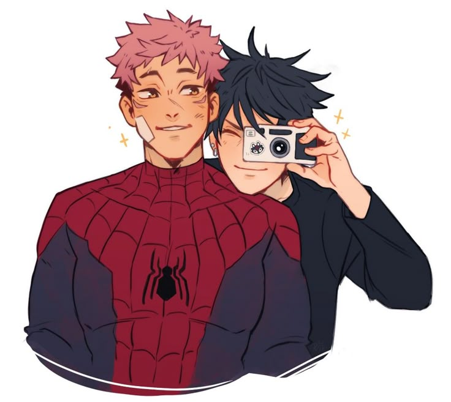
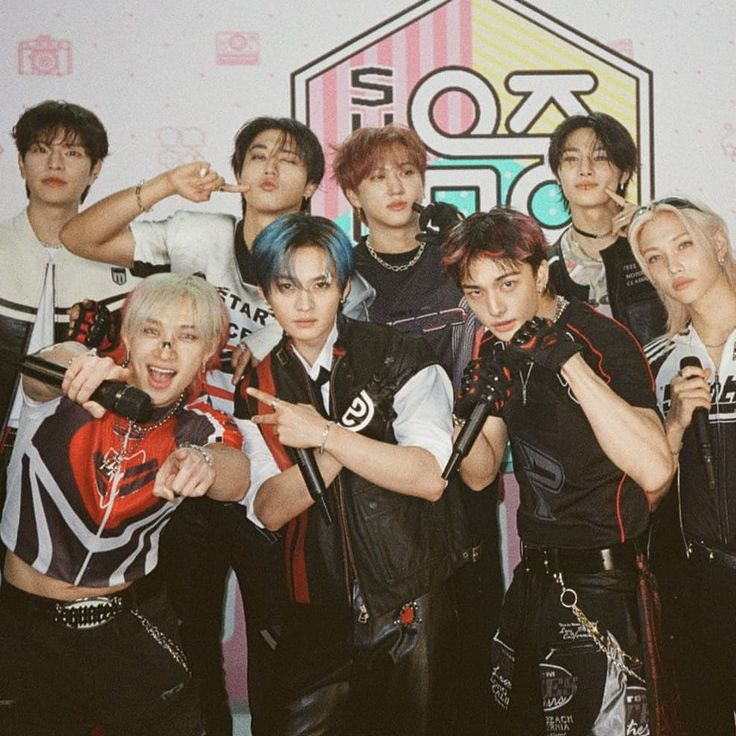

castiel / amor doce
quer saber mais sobre mim? pois aí vai!
Meu nome é Paola Raissa. Desde pequena eu queria trabalhar na área da saúde, porém, um dia comecei a fazer muitos edits diferentes. Foi ali, em meio a tantos pngs e camadas, que entendi: era com aquilo que eu queria trabalhar.
Entrei em Informática na escola EEEP principalmente pela oportunidade de ter um curso no currículo e aprender coisas novas, para que futuramente eu possa ingressar em uma faculdade de design gráfico.
Desejo me mudar para São Paulo e entrar na universidade da cidade, a USP, no curso de design gráfico.
Minha ideia inicial seria fazer um intercâmbio para o Canadá, mas coloquei São Paulo como plano A, pois parecia algo mais alcançável.
Quero me formar e trabalhar com pôsteres de álbuns de música. Gosto principalmente de designs com muita informação, vários pngs, porém não muito coloridos, seguindo apenas uma paleta de cores fixa.
Espero que meus sonhos se realizem.

algumas coisas que também fazem parte de mim.
Eu sou bigênero! Me identifico com os dois gêneros e fico confortável com os dois pronomes.
Gosto muito de coisas artesanais, feitas com as mãos. Coisas de cerâmica, crochê e etc.
Gosto muito de desenhar, de vários estilos, e odeio ficar presa em somente um.
Eu escrevo muito, desde desabafos até histórias.
Adoro colecionar todo tipo de coisa, desde pulseiras de entradas de eventos até uma pedra que achei bonita na rua.
Meu sonho era ser cabeleireira.
Desde pequena, gosto muito da Twilight Sparkle de My Little Pony.
Quero viajar o mundo e conhecer várias culturas no futuro.
Gosto muito de gatos e tenho uma chamada Lina e um chamado Mingau! Eu não sabia o sexo da Lina e chamei ela de Lino por muito tempo.
um pequeno mural de algumas das minhas coisas favoritas.

castiel / amor doce

xlov

seijinho

arcane
heated rivalry

vermelho, branco e sangue azul

livros de suspense

mo dao zu shi

itafushi

stray kids